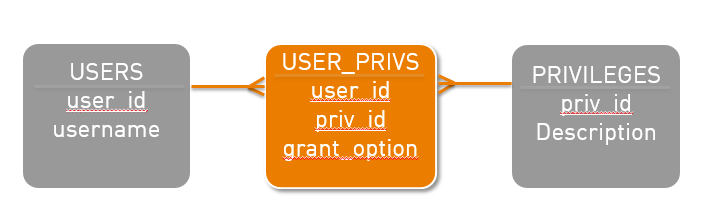

When can we use IOT? That’s a question I had when giving recently the Oracle DBA essentials workshop. the DBA Essential is very dense and there is only half a day about performance. We have the Oracle Performance Tuning workshop to go into those details. But IOTs are under used in my opinion, so I’ll post a use case for them where they are a good idea.
Basically:
- Index access is very fast to get all indexed columns, but can be longer when having to get the non-indexed columns
- IOT are fast to retreive all columns (except overflow) by primary key
- IOT are long when retreiving by secondary index when we get columns that are not in the index and that are not the primary key
Here is a good use case: you have a many-to-many relationship that you implement with an association table
This is your UML diagram:
(grantOption is a property of the association. It’s a boolean that tells if the user can grant the granted privilege to another user)
And this is how you implement it in a relational database:

So you have an association table that has a primary key which is composed of the two foreign keys, and an additional column for the association property.
And you have an index on USER_PRIVS(USER_ID,PRIV_ID) to enable the primary key. And you need to have all the foreign key indexed so you have to add an index on USER_PRIVS(PRIV_ID).
Now, for performance reasons you will probably want to add all the columns to both indexes, so you have finally those two indexes:
- USER_PRIVS(USER_ID,PRIV_ID,GRANT_OPTION)
- USER_PRIVS(PRIV_ID,USER_ID,GRANT_OPTION)
If you have a doubt about that modeling (such as why I don’t introduce a surrogate key here) please tell me, we can discuss that. But I can guarantee that this is the right approach at least in Oracle.
So when you navigate from any of the tables, you have to access only to the index. No need for the table. So why store a table ? This is where IOT comes. Let’s create that as an IOT:
CREATE TABLE USER_PRIVS ( USER_ID,PRIV_ID,GRANT_OPTION , PRIMARY KEY(USER_ID,PRIV_ID) ) ORGANISATION INDEX;
and a secondary index:
CREATE INDEX PRIV_USERS (PRIV_ID,USER_ID,GRANT_OPTION)
So, if you navigate from USERS you access directly to the index leaf that has all information.
And if you navigate from PRIVILEGES, you have also all information. Someone said that access via secondary index is long? Yes but that’s only when we have to get to the other columns because the secondary index don’t have a rowid. It stores the primary key instead and must go through the primary index to get the other columns. But there are two point in my example:
- I already have all the primary key columns in my secondary index, and Oracle is clever enough to not store them in double
- I don’t have to get to the primary index because I have evrey columns in my secondary index
Those are the indexes I would have anyway, so here I avoid to store a table: less storage, cheaper inserts and deletes.
In general, the use cases for IOT are:
- we access mainly through the primary key and accept more expensive queries when accessing otherwise. Note that the secondary index can be optimized is we ALTER INDEX … UPDATE BLOCK REFERENCES regularly
- the secondary indexes have all the columns needed for our query
The association table is in the second category and is a good occasion to implement IOT. Note that the IOT and index defined above are used by Oracle to avoid forign key table locks as both starts with one of the foreign key columns.
I will illustrate the costs of access to IOT in a future blog post.
{kind=link}
{kind=link}